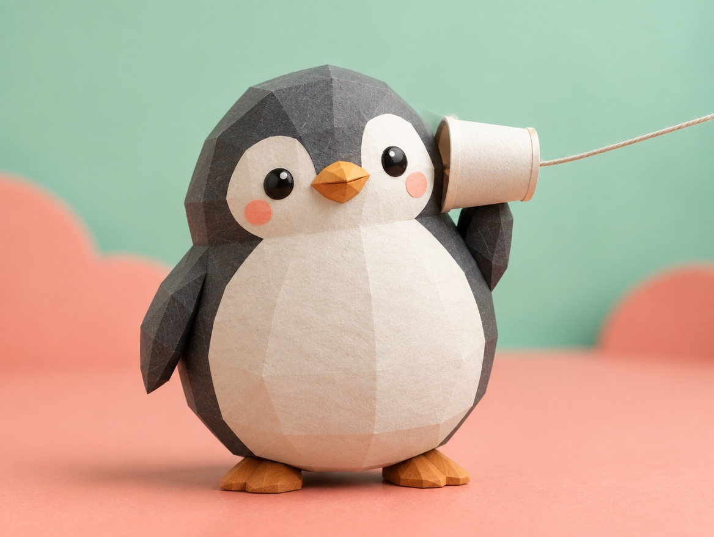

📝 DRAFT · 下書き — まだ本番に出していません · 下書き一覧
🐧 EVERYDAY LIFE⚡ 19 SEC
Put their feeling into your reply, and the talk keeps going 💬

Feeling Reply
It seems a talk keeps going when you put their feeling into your reply.
The Alarm
To "My alarm battery died, so I was late," reply not "Oh, I see," but "Wow, you must have been shocked!"
⚡ TRY IT
Make the talk keep going
Pick a reply card. Which one makes your friend talk more?
"My alarm battery died, so I was late!"
"I take 2 hours to get to school every day."
"Oh, I see."
"Wow, you must have been shocked!"
"That's far."
"Doesn't it make you tired?"
"I was! I jumped out of bed!"
"I ran to the station with my hair sticking up."
"Then I saw the clock… I was only 2 minutes late! 😂"
"Actually, it's kind of fun!"
"I read books on the train."
"This year I finished 30 books! 📚"
"…Yeah." 💤
💬 Talk length
1
Tip: try both cards and compare!
🍂 The talk ended. Try the other card!
🌱 You touched their feeling, so the story grew!
🏆 Both talks kept going! Feeling words open up memories.
Memories Come Back
When their feelings move, their memories come back, and more stories come out.
I Know
"I know!" and "Right?!" also stay close to their feelings.
📚 I learned this from the Japanese blog "Panda no Ondo".